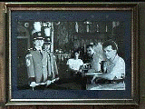

He started a quite successful volleyball carreer, to get rid of the growing pains in his back but ended up years later with serious knee injuries. He got involved in the local youth-club and rebuilt it both physically and conceptually from scratch. The club turned out to be the first place in the Ghent area where experimental new wave performances were offered in combination with low-priced Belgian high-quality beer. It is not clear whether the music or the cheap beer made this place so popular. To compensate for the lack of musical data at home - his parents' collection consisted of an album by Edith Piaf and a single by Heintje - he started to buy records. The collection concentrated on experimental pop and contemporary music by so-called weird artists. It became a true obsession, shared by the community in a weekly radio program on a local independent (illegal) station. He spent 6 years learning how to play the guitar and 6 more years trying to get rid of that craftsmanship, feeling it obstructed progress in his musical experiments with several bands.
Meanwhile he studied Mathematics and Computer Sciences to please his parents. Because:
Interior Design Is A Ladies-Job.
Still, when his parents discover a new piece of furniture at his home, they are not aware of the fact that their son is the designer. Sometimes at night, he wakes up wondering whether his parents foresaw the upcoming convergence of media into a digital platform, and as such made a visionary choice for his artistic future.
Guy c. Jules Van Belle, born in 1959 in Sint-Amandsberg, Belgium: an ugly and nerveously calm outskirt of Ghent. The only cultural influence his parents provided and allowed was the daily weather forecasts on the radio. By the time he was 14, he secretly would record a 4-string guitar and a 3-string balalaika (used for decoration amidst the stuffed birds on the mantle piece) in eternal overdub on a fifties Grundig open reel. However, the Elvis and Rocco Granata originals on the recycled tapes kept sounding through.
Music was forbidden at home, it could only draw the attention away from Latin and Greek at school. To justify his cultural interests, he went to study Language and Literature at the local University, promising his parents an easy life as a teacher Dutch and English.
We Know The Job Is Lousy, But You Get A Lot Of Holidays.
However, University's experimental psycho-acoustic studio and a bunch of old hippies who organised improvised music shifted his atttention from pop and classical music to avant-garde and contemporary music. He started taking music lessons because he thought: you have to be able to read when you want to write and perform. After a while it became obvious that this was not the right way around the problem. Playing with instruments, tapes and monophonic synthesizers was more fun. Luckily by that time also, punk was there. The nice thing about music in those days was the fact that for the crowd, it was impossible to tell who was doing what and whether it was the right place to perform certain stuff. Everybody was just messing around. In this innocent mood, he began to take things seriously and studied and practised with every audio-visual means available.
In the mean time he still played the trumpet.
Stellingname was the first joint effort by Herbert Van de Sompel and Guy c. Jules Van Belle to realize common ideas about art. They built an immense sound sculpture with steel tubes. The object was prepared with strings, metal, rubber, water, wood, glass and modified conventional instruments. The sounds were filtered through the tubes before being amplified. They performed solo, with videos, and with other ensembles. They worked in the IPEM electronic music studios and were broadcasted on the Belgian official radio (BRTN) in a dedicated program. The climax was a show with a copper & string trio, the sound sculpture and a 25-member drumband performing percussion pieces with audio tapes and video compositions.
Afterwards, at a moment when everyone else talked about mixed-media, they stopped and turned to new grounds: hyper-media. They found a new content in the emerging new sciences and the promising potential of experiments with digital machines. This radical withdrawal from analog equipment took some years of re-orientation.
Herbert Van de Sompel had to work as a systems librarian at the University Library of Ghent, where he introduced CD-ROM, SGML, multi-server networks, ...
Guy c. Jules Van Belle had to quit his job in the non-profit sector (culture and politics don't pay) to do research about Literature and new media for the Department of Teacher Education, also at the University of Ghent.
With the money they earned they bought computers and the appropriate software to build up the digital art studio . Ping. It proved to be a commercial miscalculation but provided them with an unlimited experimental playground. Young Farmers Claim Future were born.
All this material is property of Young Farmers Claim Future and may only be abused with permission:
Young Farmers Claim Future
Herbert Van de Sompel & Guy c. Jules Van Belle
Herbert.VandeSompel@rug.ac.be & Guy.VanBelle@rug.ac.be
{kind=link}
{kind=link}